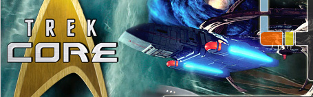

|  |
Apr 23, 2016 - [HOME] Our All-New, Mobile-Friendly News Site is Here!
Apr 21, 2016 - TrekCore Says: Our news site is under construction as we do a bit of remodeling for a few days - galleries, etc., won't be affected. Stay tuned!
Apr 19, 2016 - [MOV] REVIEW: Trek Comics #56
Apr 18, 2016 - [MOV] Pegg: BEYOND Not a Trilogy Ender, as China Invests
Apr 16, 2016 - [MOV] New BEYOND Title Graphic May Be From Final Film
Apr 16, 2016 - [TNG] TNG S7: "Homeward" HD Comparison Video
Apr 15, 2016 - [MOV] TREK BEYOND's Elba on Krall's "Hatred" of the UFP
Apr 14, 2016 - [MOV] BEYOND Trailer to Debut at May 20 'Fan Event'
Apr 14, 2016 - [GAM] New STAR TREK ONLINE Giveaway
Apr 14, 2016 - [MOV] TWOK Director's Cut Blu-ray Coming June 7
Apr 14, 2016 - [TOS] TOS Blu Box: Just $59!
Apr 14, 2016 - [TOS] Teaser for Adam Nimoy's "Spock" Documentary
Apr 13, 2016 - [NEW] About Those New STAR TREK 2017 Rumors
Apr 13, 2016 - [HOME] STRANGE NEW WORLDS Winners Named
Apr 13, 2016 - [NEW] STAR TREK 2017's Writers Room Joins Twitter
Apr 12, 2016 - [MOV] Next BEYOND Trailer Coming to 'Fan Event' in May
Apr 11, 2016 - [MOV] Paramount Features No BEYOND Footage at CinemaCon
Apr 11, 2016 - [TOS] New Con-Exclusive NCC-1701 Hallmark Ornament
Apr 11, 2016 - [MOV] STAR TREK BEYOND to Expand in Barco Escape Cinemas
Apr 10, 2016 - [MOV] Lin: BEYOND is Like the Biggest Budgeted Fan Film
Apr 10, 2016 - [MOV] New STAR TREK BEYOND Posters at Cinema Conference
Apr 10, 2016 - [TNG] TNG S7: "The Pegasus" HD Comparison Video
Apr 10, 2016 - [TOS] TOS Blu-ray Box: US & Canada Preorders Live!
Apr 09, 2016 - [TOS] '50 Years' TREK Art Collection Coming to Hardcover
Apr 08, 2016 - [MOV] 4K UHD Blu-rays: US & Canada Preorders Live!
Apr 08, 2016 - [TNG] TNG Blu-ray Box: US & Canada Preorders Live!
Apr 07, 2016 - [MOV] STAR TREK BEYOND Booth at Dubai Comic Con
Apr 05, 2016 - [MOV] Justin Lin Teases BEYOND Cameos in New Giveaway
Apr 04, 2016 - [HOME] TREK 2009 and INTO DARKNESS Hit 4K Blu-ray June 14
Apr 04, 2016 - [NEW] Teaser Posters for TREK 2017 and TREK BEYOND Debut
|
|